← 返回阅读库 · 原论文目录
论文讲解阅读文档 · 论文精读 · v221
OpenAl最新研究揭开AI幻觉真相！元凶竟是人类自己！
视频时长 00:10:29；讲解文字 3,186 字符；提取讲解画面 82 张。按视频原顺序阅读，每段文字保留时间戳。
文字来自整段视频的自动语音转写，按自然停顿分段，并与 PPT / 论文页面 / 演示画面对齐。未将讲解压缩为摘要；术语、数字和口述公式请结合画面及原论文核对。 阅读稿已校正规范部分明确术语误识别；原始逐字稿和每处修改记录另行保留。
讲解画面为源视频截图（640×360），不是可编辑 PPT 文件。全片按每秒 2 帧扫描内容变化，逐步展开页保留；连续动画保留代表画面。清晰度受源视频限制。
下载完整资料包 · 含离线 HTML、PDF、Word、全部 PPT 画面和字幕。
原论文与材料
Why Language Models Hallucinate · 下载完整 PDF（36 页）
按时间阅读
00:00:00–00:00:04 · 画面 001
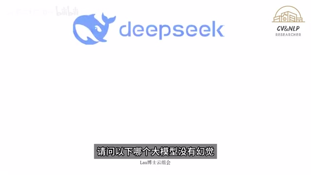
00:00:00–00:00:04 · 画面 001请问以下哪个大模型没有幻觉3 2 1 没错
00:00:04–00:00:07 · 画面 002
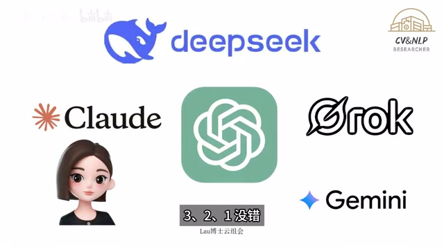
00:00:04–00:00:07 · 画面 002无一例外 他们都有市面上绝大多数的大模型
00:00:07–00:00:11 · 画面 003
00:00:07–00:00:11 · 画面 003在流畅撰写学术论文精准解答专业问题的同时
00:00:11–00:00:15 · 画面 004
00:00:11–00:00:15 · 画面 004依然会自信的输出错误事件虚构论文标题
00:00:15–00:00:19 · 画面 005
00:00:15–00:00:19 · 画面 005这种一本正经胡说话的幻觉
00:00:19–00:00:21 · 画面 006
00:00:19–00:00:21 · 画面 006始终是制约 AI 可信度的核心瓶颈
00:00:21–00:00:22 · 画面 007
00:00:21–00:00:22 · 画面 00700:00:22–00:00:23 · 画面 008
00:00:22–00:00:23 · 画面 008今天要精读的这篇引爆学术圈和工业界的论文
00:00:23–00:00:26 · 画面 009
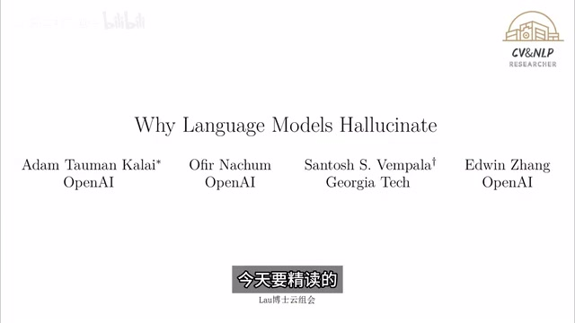
00:00:23–00:00:26 · 画面 009来自 OpenAI
00:00:26–00:00:28 · 画面 010
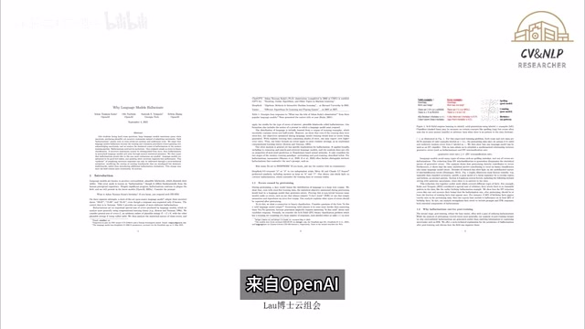
00:00:26–00:00:28 · 画面 010它彻底跳出微调模型架构的传统思路
00:00:28–00:00:30 · 画面 011
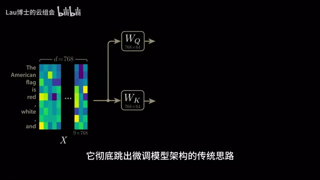
00:00:28–00:00:30 · 画面 01100:00:30–00:00:32 · 画面 012
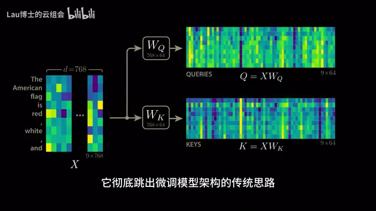
00:00:30–00:00:32 · 画面 012精准拆解了幻觉的两大核心成因
00:00:32–00:00:34 · 画面 013
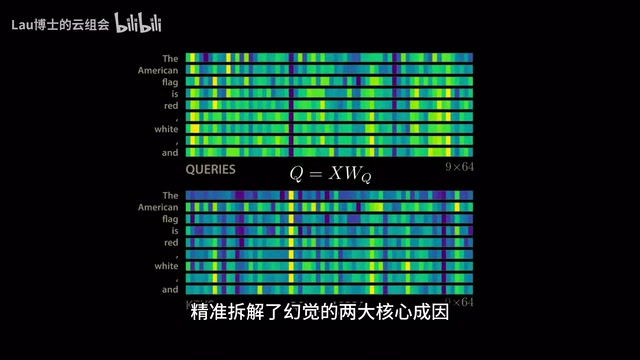
00:00:32–00:00:34 · 画面 01300:00:34–00:00:35 · 画面 014
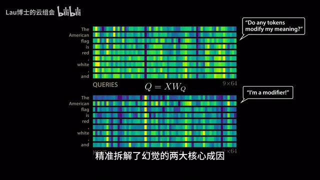
00:00:34–00:00:35 · 画面 0141 传统预训练是怎样通过二分内部差
00:00:35–00:00:37 · 画面 015
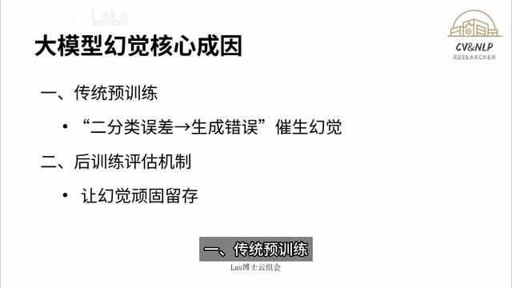
00:00:35–00:00:37 · 画面 01500:00:37–00:00:46 · 画面 016
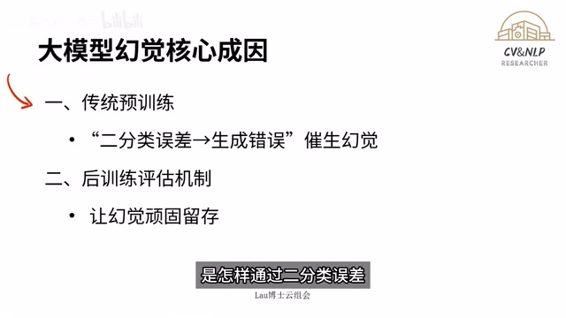
00:00:37–00:00:46 · 画面 016到深层错误的链条催生幻觉2 后训练的评估机制为何让幻觉顽固留存接下来十分钟
00:00:46–00:00:50 · 画面 017
00:00:46–00:00:50 · 画面 017我们将用听得懂的人话拆解这篇前言论文
00:00:50–00:00:54 · 画面 018
00:00:50–00:00:54 · 画面 018深入大模型幻觉本质云组绘论文精读系列
00:00:54–00:00:59 · 画面 019
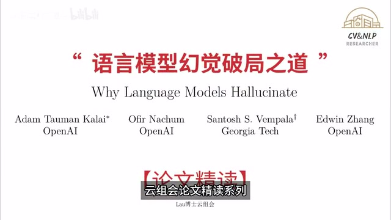
00:00:54–00:00:59 · 画面 019语言模型幻觉破局之道Why Language Models Hallucinate
00:00:59–00:01:03 · 画面 020
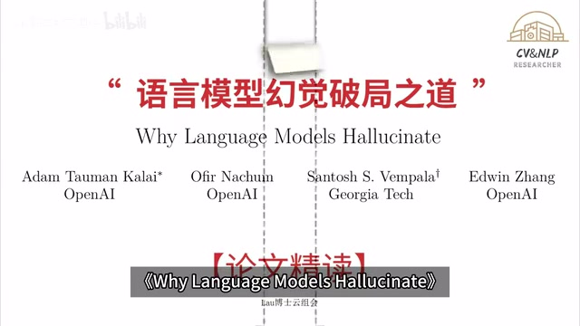
00:00:59–00:01:03 · 画面 020欢迎来到力武博士的云组绘我们每周都将至少有一篇高质量的论文精读发布出来
00:01:03–00:01:07 · 画面 021
00:01:03–00:01:07 · 画面 021相信在一系列的论文学习以后
00:01:07–00:01:11 · 画面 022
00:01:07–00:01:11 · 画面 022你就能成为人工智能领域的专家
00:01:11–00:01:15 · 画面 023
00:01:11–00:01:15 · 画面 02300:01:15–00:01:19 · 画面 024
00:01:15–00:01:19 · 画面 02400:01:19–00:01:20 · 画面 025
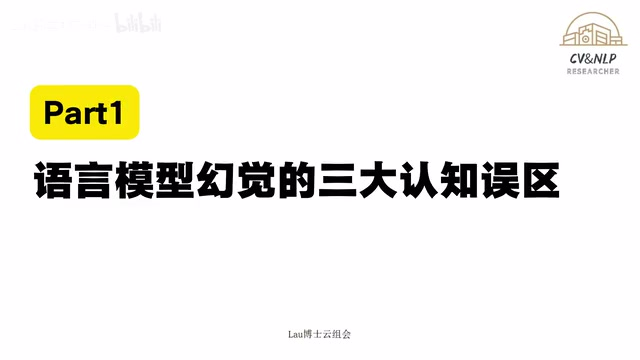
00:01:19–00:01:20 · 画面 025提到语言模型幻觉
00:01:20–00:01:24 · 画面 026
00:01:20–00:01:24 · 画面 026我们很容易陷入三个常见的认知偏差而这篇论文恰恰从根本上
00:01:24–00:01:27 · 画面 027
00:01:24–00:01:27 · 画面 027推翻了这些观点
00:01:27–00:01:36 · 画面 028
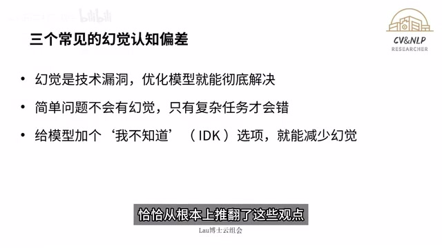
00:01:27–00:01:36 · 画面 028帮我们理清对幻觉的正确因子第一个误区是幻觉是技术漏洞优化模型就能彻底解决
00:01:36–00:01:37 · 画面 029
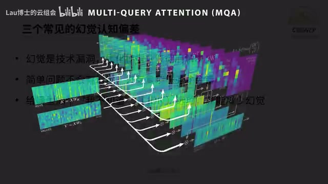
00:01:36–00:01:37 · 画面 029很多人觉得只要把模型的架构改得足够的复杂
00:01:37–00:01:41 · 画面 030
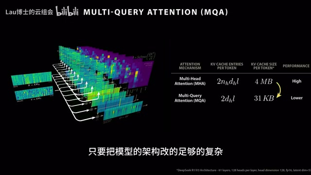
00:01:37–00:01:41 · 画面 030为更多的训练数据
00:01:41–00:01:43 · 画面 031
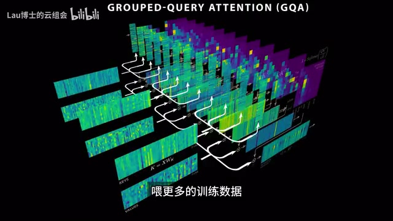
00:01:41–00:01:43 · 画面 031AI 就不会再变瞎幻觉了
00:01:43–00:01:47 · 画面 032
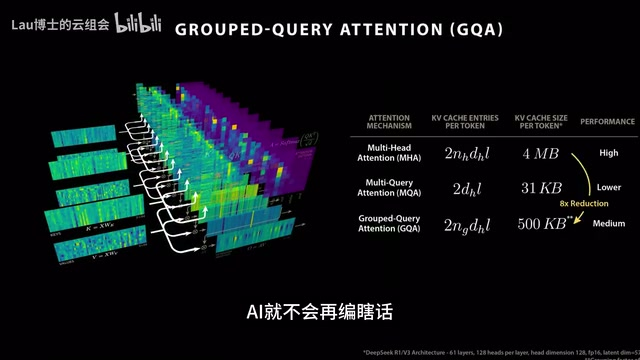
00:01:43–00:01:47 · 画面 032但论文明确的指出，哪怕训练数据里没有一丝错误，预训练时的最小化交叉桑的损失目标也会让模型忍不住生成错误的内容。这就像我们平时聊天，要是对某个梗不清楚，为了让话题继续进行，也会不自觉的附和，对对对。这种猜测不是故意的，而是统计习惯下的必然结果。
00:01:47–00:01:49 · 画面 033
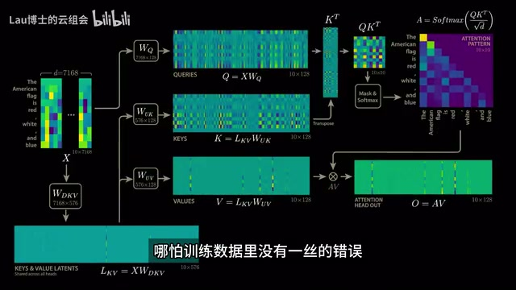
00:01:47–00:01:49 · 画面 03300:01:49–00:01:52 · 画面 034
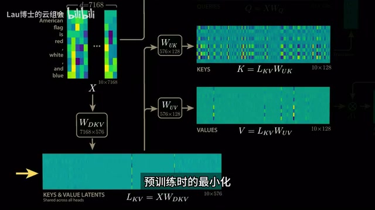
00:01:49–00:01:52 · 画面 03400:01:52–00:01:53 · 画面 035
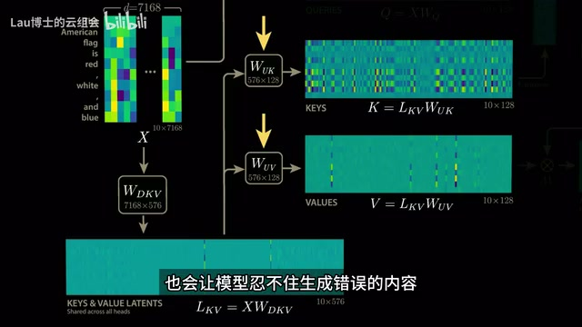
00:01:52–00:01:53 · 画面 03500:01:53–00:01:54 · 画面 036
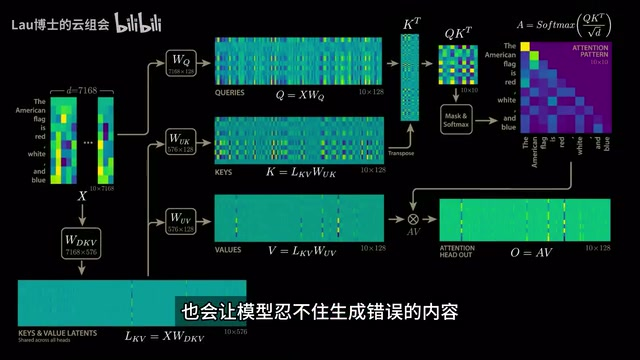
00:01:53–00:01:54 · 画面 03600:01:54–00:01:55 · 画面 037
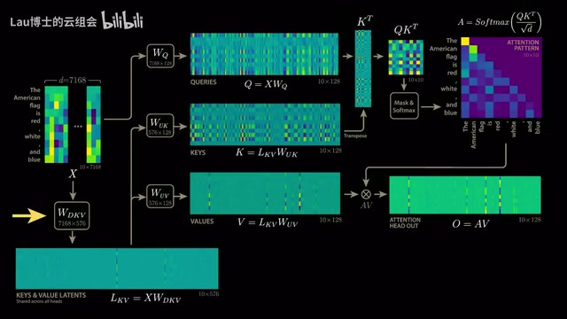
00:01:54–00:01:55 · 画面 03700:01:55–00:01:59 · 画面 038
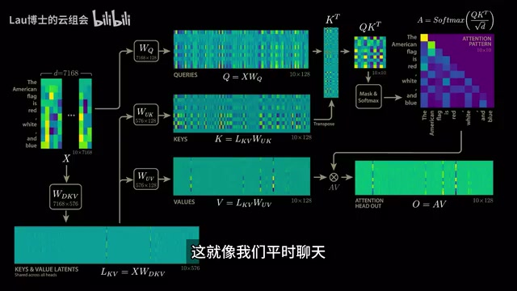
00:01:55–00:01:59 · 画面 03800:01:59–00:02:03 · 画面 039
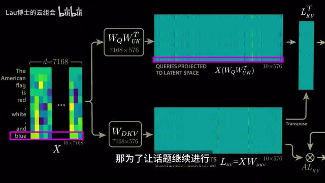
00:01:59–00:02:03 · 画面 03900:02:03–00:02:04 · 画面 040
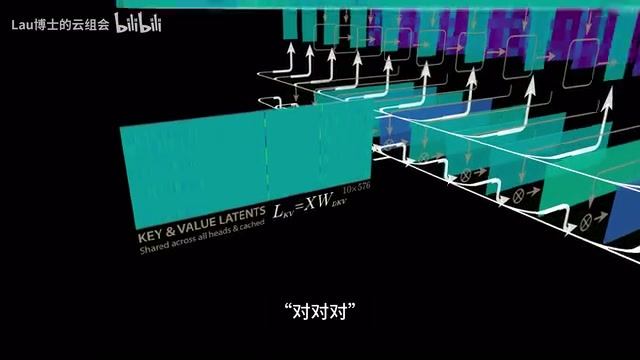
00:02:03–00:02:04 · 画面 04000:02:04–00:02:05 · 画面 041
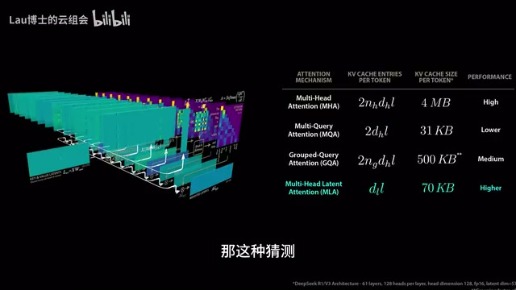
00:02:04–00:02:05 · 画面 04100:02:05–00:02:08 · 画面 042
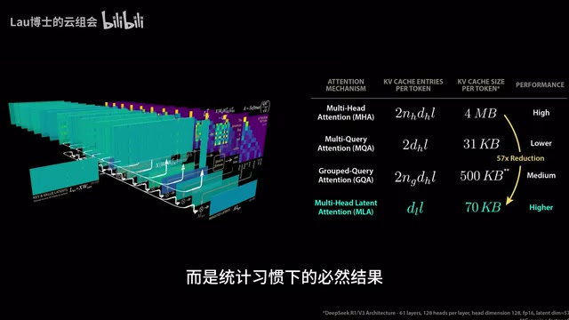
00:02:05–00:02:08 · 画面 042第二个误区是简单的问题不会有幻觉，只有复杂的任务才会出错。其实不养，哪怕像是数字母说生日这样简单的事，模型也会出错。比如问本文的作者 Adam 的生日，ChatGPT 、DeepSeek，那么三个主流模型给出的日期全是错的。再比如数 DeepSeek 有几个 D、DeepSeek V3 测 10 次，居然给出 2367
00:02:08–00:02:20 · 画面 043
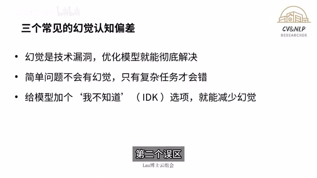
00:02:08–00:02:20 · 画面 04300:02:20–00:02:48 · 画面 044
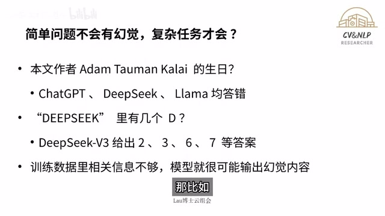
00:02:20–00:02:48 · 画面 044等好几种答案而正确的答案其实是一个这就说明不管任务多简单只要训练的数据里的相关的信息不够比如某个人的生日很少被提到模型就可能输出幻觉的内容第三个误区是给模型加个我不知道 IDK 选项就能减少幻觉但我们通过实验发现现在的评估体系都是二元制答对了得一分
00:02:48–00:02:52 · 画面 045
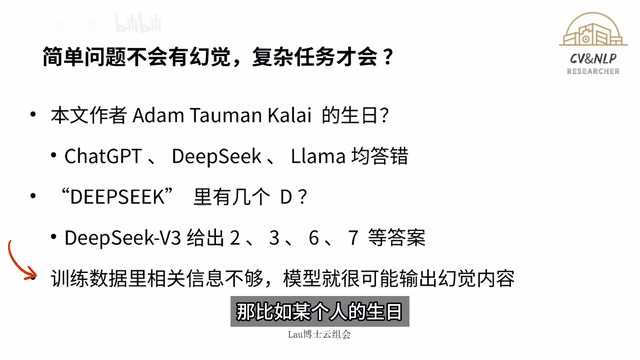
00:02:48–00:02:52 · 画面 04500:02:52–00:02:54 · 画面 046
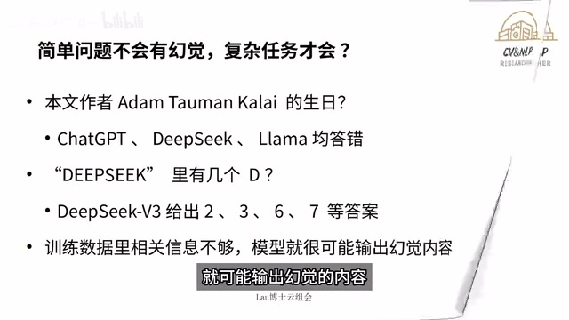
00:02:52–00:02:54 · 画面 04600:02:54–00:03:00 · 画面 047
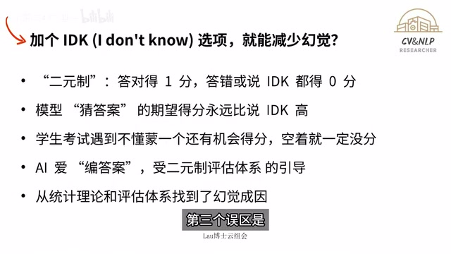
00:02:54–00:03:00 · 画面 04700:03:00–00:03:38 · 画面 048
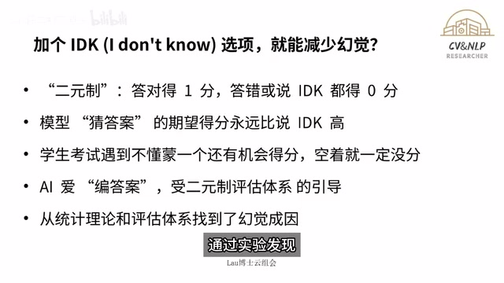
00:03:00–00:03:38 · 画面 048答错或者说 IDK 都得 0 分那在这样的规则下模型猜答案的期望得分永远比说 IDK 要高就像学生考试遇到了不会的选择题蒙一个还有机会得分空着就一定没分 AI 之所以爱编答案那本质上是这种评估的体系教出来的说到底靠优化技术加 IDK 选项的这些表面办法解决不了幻觉的根本问题这篇论文的过人之处就在于它跳出了修修补补技术的思路从统计理论和评估体系这两个更深层次的角度找到了幻觉真正的成因
00:03:38–00:03:44 · 画面 049
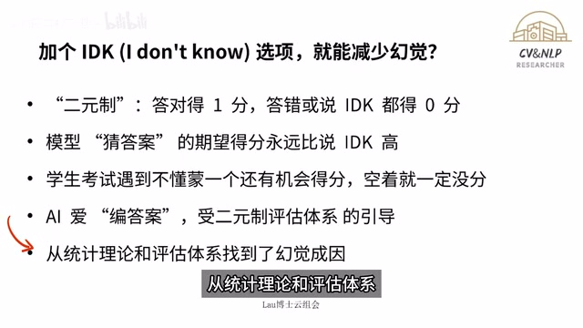
00:03:38–00:03:44 · 画面 04900:03:44–00:03:45 · 画面 050
00:03:44–00:03:45 · 画面 05000:03:45–00:03:47 · 画面 051
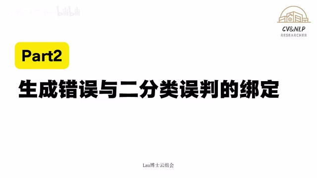
00:03:45–00:03:47 · 画面 051这里的二分类误判，也就是 Is-It-Valid 的问题，是判断模型输出是否有效的二分类问题。作者提出了一个关键的推论，即模型输出错误的概率至少是他在二分类误判任务上判错概率的两倍减修正值。有点要哈没事，一看下面这个表就理解了
00:03:47–00:04:06 · 画面 052
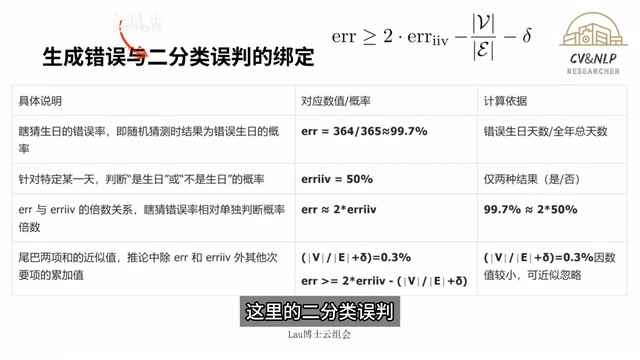
00:03:47–00:04:06 · 画面 05200:04:06–00:04:57 · 画面 053
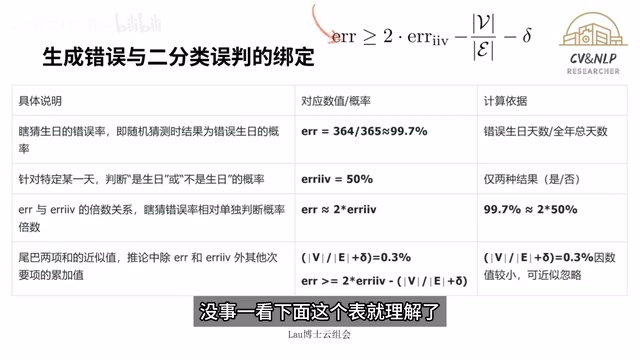
00:04:06–00:04:57 · 画面 053365 天只有一天是正确的生日其他的 364 天都是错误的经过计算人分不清对错瞎猜的错误率是 99.7%如果让人单独去猜某一天是生日与否这个时候的概率就是 50%我们带入到这个推论就是 ERA 等于 99.7%ERA IIV 等于 50%前者大致是后者概率的两倍尾巴的这两项的核比较小可以近视的认为是 0.3%这个数学的推论就表明预训练幻觉是统计必然只要数据有信息缺口比如缺乏数据罕见事实高复杂度的任务等等幻觉就会出现到这里没听懂也没关系不影响我们接着往下看你只要知道这幻觉被作者证明是统计学上必然的事件就可以了
00:04:57–00:04:59 · 画面 054
00:04:57–00:04:59 · 画面 05400:04:59–00:05:01 · 画面 055
00:04:59–00:05:01 · 画面 05500:05:01–00:05:03 · 画面 056
00:05:01–00:05:03 · 画面 056既然预训练幻觉是统计必然那么微调阶段的评估体系则会让幻觉越演越烈形成恶性循环核心问题就在二元平分上开头我们讲幻觉三大误区的时候提到现在给模型打分基本都是答对得 1 分打错或者说我不知道也就是 IDK 得 0 分在这种规则下模型猜答案永远比说 IDK 更划算
00:05:03–00:05:13 · 画面 057
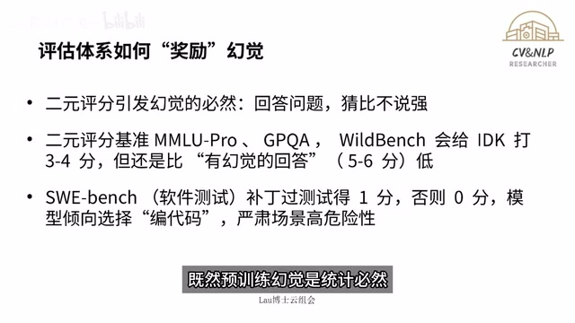
00:05:03–00:05:13 · 画面 05700:05:13–00:05:14 · 画面 058
00:05:13–00:05:14 · 画面 05800:05:14–00:05:45 · 画面 059
00:05:14–00:05:45 · 画面 059比如模型对某道题只有 10%的把握答对猜答案的话有 10%的机会得 1 分 90%的机会得 0 分平均能得 0.1 分但说 IDK 就只能得 0 分哪怕把握再小猜都比不说强
00:05:45–00:05:46 · 画面 060
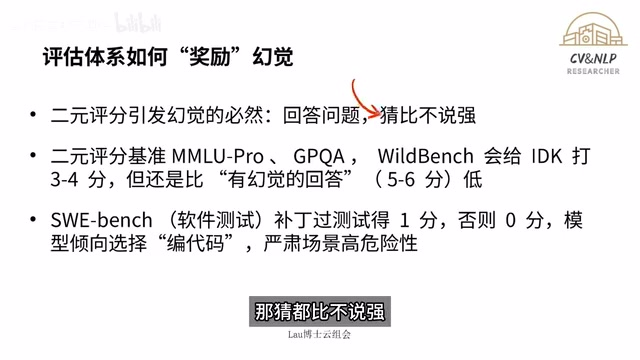
00:05:45–00:05:46 · 画面 060再看实际的评估基准，比如 MMLU 、ProGPQA 这些常用的测试，全是二元评分，IDK 都得 0 分。只有 WildBench 会给 IDK 打 3 到 4 分，但还是比有幻觉的回答 5 到 6 分要低，还是鼓励模型去猜
00:05:46–00:06:41 · 画面 061
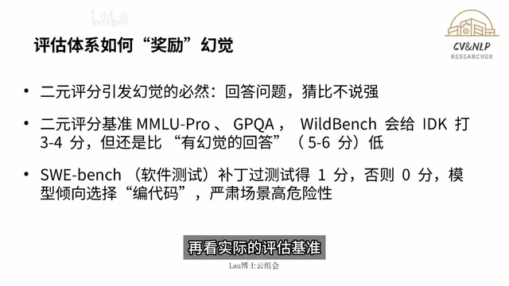
00:05:46–00:06:41 · 画面 061SWE-bench 来说，要求模型修 GitHub 的代码漏洞，规则是补丁通过测试得 1 分，否则得 0 分。模型哪怕修不好，编个看似合理的错误补丁，有微小的机会会通过，但说修不了就一定得 0 分。这种规则下模型肯定会选编代码，不会承认能力不足更糟的是，模型在微调时学会猜答案得分，到了医疗、法律这些严肃的场景也会继续编答案，完全不顾错误的风险。那就像学生蒙答案成了习惯，工作当中也会随便下结论。作者用四类实验总结了与幻觉相关的内容，第一是模型幻觉现象测试，测试了 DeepSeek V3Meta AI 等模型，发现了它们在 Adam 的生日或是 DeepSeek 字母 D 的计数
00:06:41–00:06:43 · 画面 062
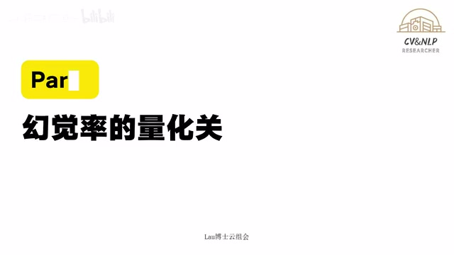
00:06:41–00:06:43 · 画面 06200:06:43–00:07:08 · 画面 063
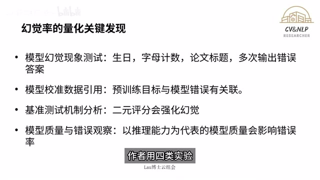
00:06:43–00:07:08 · 画面 063又或者是 Adam 的博士论文的标题里面的这些问题多次输出了错误的答案，没有遵循仅以知识回答的要求。2 模型校准数据引用引用了 OpenAI2023 年 GPT-4 的数据显示，预训练模型的校准度比较高，ECE 达到了 0.007，经强化学习的 PPO 以后，校准度下降，ECE 是 0.074，支撑了预训练目标与模型错误的观念。
00:07:08–00:07:13 · 画面 064
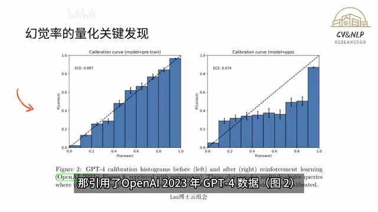
00:07:08–00:07:13 · 画面 06400:07:13–00:07:16 · 画面 065
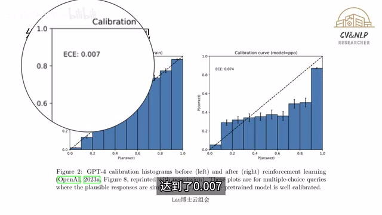
00:07:13–00:07:16 · 画面 06500:07:16–00:07:20 · 画面 066
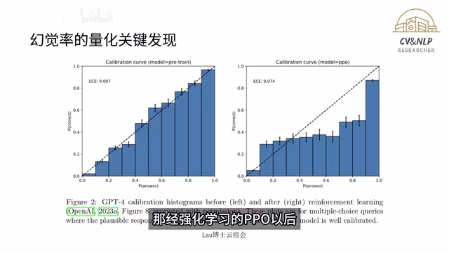
00:07:16–00:07:20 · 画面 06600:07:20–00:07:23 · 画面 067
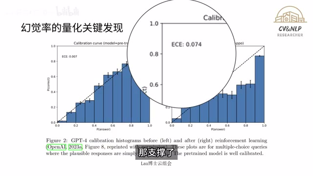
00:07:20–00:07:23 · 画面 06700:07:23–00:07:25 · 画面 068
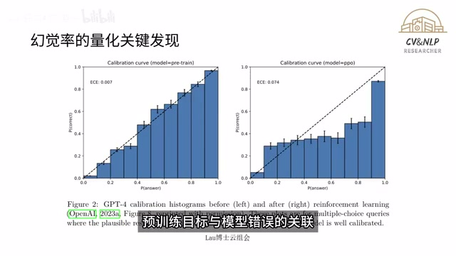
00:07:23–00:07:25 · 画面 068基准测试机制分析分析了 GPQA MMLU Pro 等主流的基准指出它的二元评分也就是正确得 1 分空白或者是 IDK 得 0 分的奖励猜测引用了史塔夫 AI 指数报告 Google Gemini 2.5 Pro 的模型卡片都说明这个机制强化了幻觉
00:07:25–00:07:56 · 画面 069
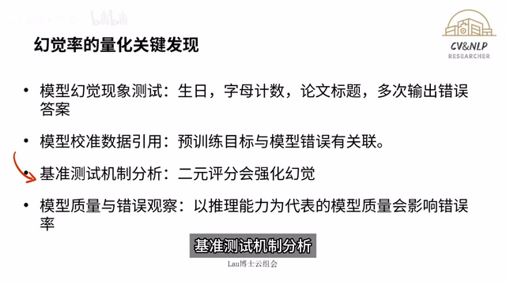
00:07:25–00:07:56 · 画面 069是模型质量与错误观察，DeepSeek R1 能够通过链式推理正确的完成字母的计数，而 DeepSeek V3 频繁出错。那表明模型质量，比如推理能力，是会影响到错误率的。接下来我们来看看作者给出了什么样的核心方案来缓解幻觉，首先是评估体系的改进
00:07:56–00:07:58 · 画面 070
00:07:56–00:07:58 · 画面 07000:07:58–00:08:23 · 画面 071
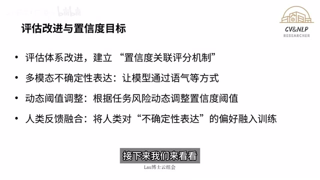
00:07:58–00:08:23 · 画面 071摒弃了正确得 1 分，空白或是 IDK 得 0 分的单一二元评分，建立了自信度关联评分机制，按高自信正确得分，高自信错误扣高分，低自信 IDK 得基础分。打分避免模型因猜测获利产生幻觉。以查询 Adam 生日为例，模型如果是处于高自信 95%
00:08:23–00:08:24 · 画面 072
00:08:23–00:08:24 · 画面 07200:08:24–00:08:36 · 画面 073
00:08:24–00:08:36 · 画面 073输出错误日期按规则扣高分比如满分是 10 分得分是-5 分如果是没有记录的选了 IDK 自信度 30%得基础分 3 分如果高自信输出了正确的日期得 10 分新的机制避免了模型因猜测获利减少了幻觉
00:08:36–00:08:37 · 画面 074
00:08:36–00:08:37 · 画面 07400:08:37–00:08:50 · 画面 075
00:08:37–00:08:50 · 画面 07500:08:50–00:08:51 · 画面 076
00:08:50–00:08:51 · 画面 076论文还指出了三个未来的研究方向第一 多模态不确定性表达除了我不知道让模型通过语气比如可能推测、内容省略、不编造细节等方式更自然的表达不确定性第二 动态的阈值调整
00:08:51–00:09:05 · 画面 077
00:08:51–00:09:05 · 画面 07700:09:05–00:09:34 · 画面 078
00:09:05–00:09:34 · 画面 078根据任务的风险动态的去调整自信度预指 T，现实世界危害高的场景需要更高的 T，日常的场景可以降低 T。比如在医疗诊断当中，T 的值可以是大一些，日常闲聊的 T 的值可以是小一些。第三，人类的反馈融合，将人类对不确定性表达的偏好融入训练，让模型的行为更符合人类的预期。
00:09:34–00:09:35 · 画面 079
00:09:34–00:09:35 · 画面 07900:09:35–00:09:36 · 画面 080
00:09:35–00:09:36 · 画面 080这篇论文的价值不仅在于揭示了幻觉的本质，更在于为 AI 可靠性研究提供了全新的视角。它让我们意识到，AI 的谎言很多时候不是因为能力不足，而是因为我们的评价标准出了问题。当我们用非对即错的恶人思维要求 AI 时，它只能学会要么满分，要么撒谎。而当我们允许 AI 说不知道，并给予合理的激励时，它才能真正走向可靠。
00:09:36–00:10:28 · 画面 081
00:09:36–00:10:28 · 画面 081对于科研工作者的启示尤为珍贵。一是跳出技术修补的思维，与其在模型的架构上小修小补，不如在训练目标、评估体系等根源层面的问题去进行思考。二是要重视统计理论的指导，原模型很多的行为，比如幻觉，可以通过经典的统计学理论去解释。回归理论基础可能带来更大的突破。
00:10:28–00:10:29 · 画面 082
00:10:28–00:10:29 · 画面 082转写与来源说明 · 0 个自动复核提示
保留 63 个原始语音片段，0 个片段触发自动复核提示。提示仅用于定位可能的术语、重复或识别问题，不等于已确认错误。
讲解画面为源视频截图（640×360），不是可编辑 PPT 文件。全片按每秒 2 帧扫描内容变化，逐步展开页保留；连续动画保留代表画面。清晰度受源视频限制。
原视频：paper/合集_2026-10-16_论文精读/OpenAl最新研究揭开AI幻觉真相！元凶竟是人类自己！.mp4
SHA-256：268eebef74e0872bc459843918638bc0da8043f87804722d2d343665a17b94e1
全文按视频语音与画面制作。原论文可从上方链接下载；完整资料包保留全文、原始逐字稿、字幕和校对记录。